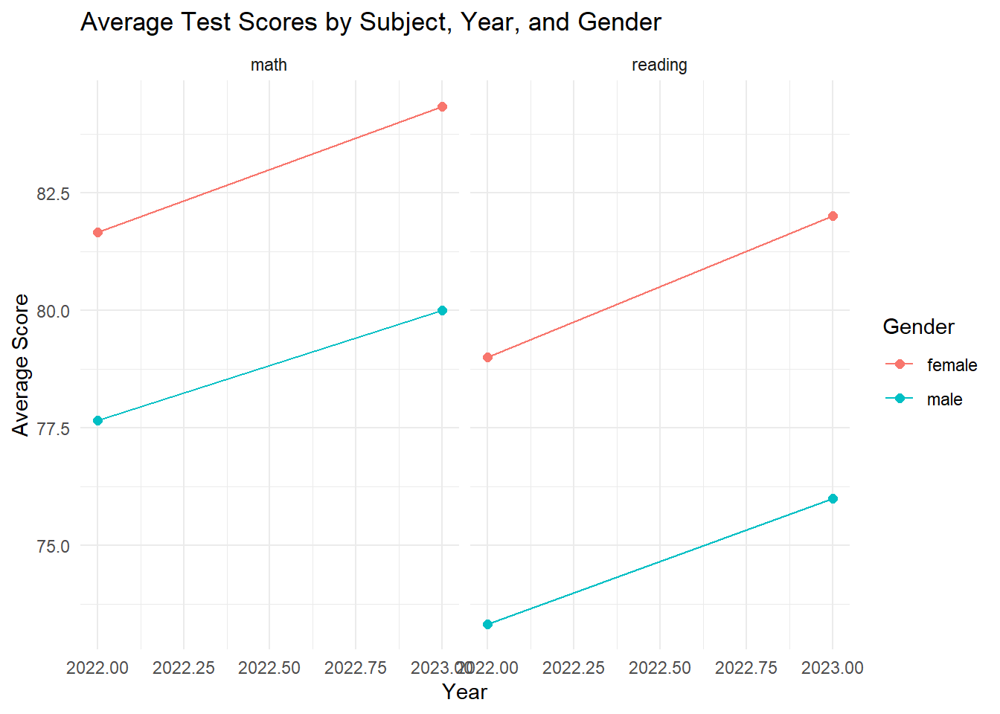

8 Tidy Data with tidyr
If your data were an employee, “tidy data” would be the dress code. Show up in the right format and everything goes smoothly — meetings (charts), performance reviews (summaries), promotions (models). Show up in pajamas and… well, you have seen what happens when your boss emails you a spreadsheet with 47 merged cells.
The tidyr package is your corporate stylist. It takes the messy CSV exports, the nightmare quarterly reports, and the “creative” Excel files from accounting and whips them into shape.
8.1 What is Tidy Data?
Three rules. Memorize them like your company’s WiFi password:
- Each variable gets its own column. Revenue, Region, Quarter — each one lives alone.
- Each observation gets its own row. One row per thing you measured.
- Each cell contains one value. No smuggling “Q1/2024” into a single cell like contraband.
Here is what tidy data looks like:
tidy_example <- tribble(
~country, ~year, ~cases, ~population,
"Afghanistan", 2000, 745, 20000000,
"Afghanistan", 2001, 2666, 20595360,
"Brazil", 2000, 37737, 172006362,
"Brazil", 2001, 80488, 174504898,
"China", 2000, 212258, 1280428583,
"China", 2001, 213766, 1272915272
)
tidy_example
#> # A tibble: 6 × 4
#> country year cases population
#> <chr> <dbl> <dbl> <dbl>
#> 1 Afghanistan 2000 745 20000000
#> 2 Afghanistan 2001 2666 20595360
#> 3 Brazil 2000 37737 172006362
#> 4 Brazil 2001 80488 174504898
#> 5 China 2000 212258 1280428583
#> 6 China 2001 213766 1272915272Every variable is a column. Every row is one observation. Every cell has one value. It is the data equivalent of a well-organized filing cabinet — boring, beautiful, and incredibly functional.
8.2 Common Ways Data Gets Messy
Real-world data breaks these rules constantly. Here are the repeat offenders you will encounter in the wild.
8.2.1 Column Headers That Are Actually Values
This is the number-one offender. Your boss hands you a spreadsheet where the column headers are months or years. Those columns are not variable names — they are values of a variable pretending to be column headers.
messy_wide <- tribble(
~country, ~`2000`, ~`2001`, ~`2002`,
"Afghanistan", 745, 2666, 2900,
"Brazil", 37737, 80488, 90125,
"China", 212258, 213766, 220000
)
messy_wide
#> # A tibble: 3 × 4
#> country `2000` `2001` `2002`
#> <chr> <dbl> <dbl> <dbl>
#> 1 Afghanistan 745 2666 2900
#> 2 Brazil 37737 80488 90125
#> 3 China 212258 213766 220000The years 2000, 2001, and 2002 are values of a year variable, and the actual measurement (cases) is smeared across three columns. We need to pivot this into a longer format — think of it as turning a wide Excel report sideways so the database can read it.
8.2.2 Two Variables Jammed into One Column
Sometimes someone thought cramming two values into one cell with a slash was a time-saver. (It was not.)
messy_combined <- tribble(
~country, ~year, ~rate,
"Afghanistan", 2000, "745/20000000",
"Afghanistan", 2001, "2666/20595360",
"Brazil", 2000, "37737/172006362",
"Brazil", 2001, "80488/174504898"
)
messy_combined
#> # A tibble: 4 × 3
#> country year rate
#> <chr> <dbl> <chr>
#> 1 Afghanistan 2000 745/20000000
#> 2 Afghanistan 2001 2666/20595360
#> 3 Brazil 2000 37737/172006362
#> 4 Brazil 2001 80488/174504898That rate column is smuggling both cases and population. We need to separate them.
8.2.3 Values That Should Be Column Names Stuck in Rows
Sometimes what should be separate columns is listed as categories in a single column — like putting “Revenue” and “Expenses” in the same field and hoping for the best.
messy_both <- tribble(
~country, ~year, ~type, ~count,
"Afghanistan", 2000, "cases", 745,
"Afghanistan", 2000, "population", 20000000,
"Afghanistan", 2001, "cases", 2666,
"Afghanistan", 2001, "population", 20595360,
"Brazil", 2000, "cases", 37737,
"Brazil", 2000, "population", 172006362
)
messy_both
#> # A tibble: 6 × 4
#> country year type count
#> <chr> <dbl> <chr> <dbl>
#> 1 Afghanistan 2000 cases 745
#> 2 Afghanistan 2000 population 20000000
#> 3 Afghanistan 2001 cases 2666
#> 4 Afghanistan 2001 population 20595360
#> 5 Brazil 2000 cases 37737
#> 6 Brazil 2000 population 172006362The type column contains what should be variable names. We need to pivot wider to give cases and population their own columns.
8.3 pivot_longer() – Fixing Wide Spreadsheets
This is the function you will use the most. Anytime your boss gives you a spreadsheet with months-as-columns, quarters-as-columns, or product-lines-as-columns, pivot_longer() is the fix. Think of it as converting that wide executive dashboard back into proper database rows.
8.3.1 Basic Usage
messy_wide
#> # A tibble: 3 × 4
#> country `2000` `2001` `2002`
#> <chr> <dbl> <dbl> <dbl>
#> 1 Afghanistan 745 2666 2900
#> 2 Brazil 37737 80488 90125
#> 3 China 212258 213766 220000
messy_wide %>%
pivot_longer(
cols = `2000`:`2002`,
names_to = "year",
values_to = "cases"
)
#> # A tibble: 9 × 3
#> country year cases
#> <chr> <chr> <dbl>
#> 1 Afghanistan 2000 745
#> 2 Afghanistan 2001 2666
#> 3 Afghanistan 2002 2900
#> 4 Brazil 2000 37737
#> 5 Brazil 2001 80488
#> 6 Brazil 2002 90125
#> 7 China 2000 212258
#> 8 China 2001 213766
#> 9 China 2002 220000Compare this to the messy version above: we went from 3 rows and 4 columns to 9 rows and 3 columns. Each row is now one country in one year — a single observation. The wide format was convenient for a human glancing at a spreadsheet, but this long format is what ggplot2, dplyr, and every modeling function in R expects.
Three arguments to tattoo on your forearm:
-
cols: Which columns to pivot (the ones that are really values in disguise). -
names_to: What to name the new column that holds the old column headers. -
values_to: What to name the new column that holds the numbers.
Notice year came in as text. Fix that automatically:
messy_wide %>%
pivot_longer(
cols = `2000`:`2002`,
names_to = "year",
values_to = "cases",
names_transform = list(year = as.integer)
)
#> # A tibble: 9 × 3
#> country year cases
#> <chr> <int> <dbl>
#> 1 Afghanistan 2000 745
#> 2 Afghanistan 2001 2666
#> 3 Afghanistan 2002 2900
#> 4 Brazil 2000 37737
#> 5 Brazil 2001 80488
#> 6 Brazil 2002 90125
#> 7 China 2000 212258
#> 8 China 2001 213766
#> 9 China 2002 2200008.3.2 Selecting Which Columns to Pivot
You have several ways to tell pivot_longer() which columns to grab:
student_scores <- tribble(
~student, ~math_midterm, ~math_final, ~english_midterm, ~english_final,
"Alice", 88, 92, 78, 85,
"Bob", 76, 81, 90, 88,
"Carol", 95, 97, 82, 91
)
student_scores
#> # A tibble: 3 × 5
#> student math_midterm math_final english_midterm english_final
#> <chr> <dbl> <dbl> <dbl> <dbl>
#> 1 Alice 88 92 78 85
#> 2 Bob 76 81 90 88
#> 3 Carol 95 97 82 91Pivot everything except the ID column (the most common pattern — “give me everything but the name”):
student_scores %>%
pivot_longer(
cols = -student,
names_to = "exam",
values_to = "score"
)
#> # A tibble: 12 × 3
#> student exam score
#> <chr> <chr> <dbl>
#> 1 Alice math_midterm 88
#> 2 Alice math_final 92
#> 3 Alice english_midterm 78
#> 4 Alice english_final 85
#> 5 Bob math_midterm 76
#> 6 Bob math_final 81
#> 7 Bob english_midterm 90
#> 8 Bob english_final 88
#> 9 Carol math_midterm 95
#> 10 Carol math_final 97
#> 11 Carol english_midterm 82
#> 12 Carol english_final 91Use starts_with() to grab columns by prefix:
student_scores %>%
pivot_longer(
cols = starts_with("math"),
names_to = "math_exam",
values_to = "math_score"
)
#> # A tibble: 6 × 5
#> student english_midterm english_final math_exam math_score
#> <chr> <dbl> <dbl> <chr> <dbl>
#> 1 Alice 78 85 math_midterm 88
#> 2 Alice 78 85 math_final 92
#> 3 Bob 90 88 math_midterm 76
#> 4 Bob 90 88 math_final 81
#> 5 Carol 82 91 math_midterm 95
#> 6 Carol 82 91 math_final 978.3.3 A Business Example: Quarterly Revenue
Here is a scenario you will encounter, probably within your first week on the job. Quarterly revenue, wide format, straight out of the CFO’s favorite spreadsheet:
quarterly_revenue <- tribble(
~company, ~Q1_revenue, ~Q2_revenue, ~Q3_revenue, ~Q4_revenue,
"Acme", 100, 120, 130, 150,
"Beta", 200, 210, 250, 270
)
quarterly_revenue %>%
pivot_longer(
cols = -company,
names_to = "quarter",
values_to = "revenue",
names_pattern = "Q(\\d)_revenue"
)
#> # A tibble: 8 × 3
#> company quarter revenue
#> <chr> <chr> <dbl>
#> 1 Acme 1 100
#> 2 Acme 2 120
#> 3 Acme 3 130
#> 4 Acme 4 150
#> 5 Beta 1 200
#> 6 Beta 2 210
#> 7 Beta 3 250
#> 8 Beta 4 270The names_pattern uses a regular expression to extract just the quarter number. Now it is ready to plot as a trend line instead of sitting awkwardly in a wide table.
8.3.4 Dropping NAs While Pivoting
Got sparse data with blank cells everywhere? Use values_drop_na = TRUE and leave the ghosts behind:
sparse_data <- tribble(
~id, ~week1, ~week2, ~week3,
"A", 10, NA, 30,
"B", NA, 25, 35,
"C", 15, 20, NA
)
sparse_data %>%
pivot_longer(
cols = -id,
names_to = "week",
values_to = "measurement",
values_drop_na = TRUE
)
#> # A tibble: 6 × 3
#> id week measurement
#> <chr> <chr> <dbl>
#> 1 A week1 10
#> 2 A week3 30
#> 3 B week2 25
#> 4 B week3 35
#> 5 C week1 15
#> 6 C week2 208.3.5 Pivoting Column Names with Multiple Pieces
Sometimes column names encode more than one thing. Our student scores have both subject and exam type baked into the name:
student_scores %>%
pivot_longer(
cols = -student,
names_to = c("subject", "exam"),
names_sep = "_",
values_to = "score"
)
#> # A tibble: 12 × 4
#> student subject exam score
#> <chr> <chr> <chr> <dbl>
#> 1 Alice math midterm 88
#> 2 Alice math final 92
#> 3 Alice english midterm 78
#> 4 Alice english final 85
#> 5 Bob math midterm 76
#> 6 Bob math final 81
#> 7 Bob english midterm 90
#> 8 Bob english final 88
#> 9 Carol math midterm 95
#> 10 Carol math final 97
#> 11 Carol english midterm 82
#> 12 Carol english final 91The names_sep = "_" splits each column name at the underscore and distributes the pieces into two new columns. One line of code, two new variables. Not bad.
8.4 pivot_wider() – Going the Other Way
Sometimes you need to spread data out instead of collapsing it down. Building a summary table for the quarterly all-hands? Prepping a cross-tab for a slide deck? That is pivot_wider() territory.
8.4.1 Basic Usage
Remember our messy dataset where variable names were stuck in a column?
messy_both
#> # A tibble: 6 × 4
#> country year type count
#> <chr> <dbl> <chr> <dbl>
#> 1 Afghanistan 2000 cases 745
#> 2 Afghanistan 2000 population 20000000
#> 3 Afghanistan 2001 cases 2666
#> 4 Afghanistan 2001 population 20595360
#> 5 Brazil 2000 cases 37737
#> 6 Brazil 2000 population 172006362
messy_both %>%
pivot_wider(
names_from = type,
values_from = count
)
#> # A tibble: 3 × 4
#> country year cases population
#> <chr> <dbl> <dbl> <dbl>
#> 1 Afghanistan 2000 745 20000000
#> 2 Afghanistan 2001 2666 20595360
#> 3 Brazil 2000 37737 172006362Now cases and population are proper columns instead of being stacked as values in the type column. Each row is one country in one year with both measurements side-by-side — which means you can now easily compute a rate (cases / population) as a new column.
Two arguments:
-
names_from: The column whose values become new column headers. -
values_from: The column whose values fill those new columns.
8.4.2 Filling in Missing Combinations
When some combinations do not exist, you get NAs. Use values_fill to swap them for something friendlier:
weekly_sales <- tribble(
~store, ~product, ~sales,
"North", "Apples", 100,
"North", "Bananas", 150,
"South", "Apples", 200,
"South", "Cherries", 80,
"East", "Bananas", 120
)
weekly_sales %>%
pivot_wider(
names_from = product,
values_from = sales,
values_fill = 0
)
#> # A tibble: 3 × 4
#> store Apples Bananas Cherries
#> <chr> <dbl> <dbl> <dbl>
#> 1 North 100 150 0
#> 2 South 200 0 80
#> 3 East 0 120 0Without values_fill = 0, the East store shows NA for Apples and Cherries. With it, you get zeros — much better for a sales report that lands on a VP’s desk.
8.4.3 When to Use pivot_wider()
Reach for this when you need to:
- Build summary tables for a slide deck or report
- Create cross-tabulations (survey responses by question, products by region)
- Match a required input format for a specific function or tool
survey <- tribble(
~respondent, ~question, ~answer,
"R1", "satisfaction", "High",
"R1", "recommend", "Yes",
"R2", "satisfaction", "Medium",
"R2", "recommend", "No",
"R3", "satisfaction", "High",
"R3", "recommend", "Yes"
)
survey %>%
pivot_wider(
names_from = question,
values_from = answer
)
#> # A tibble: 3 × 3
#> respondent satisfaction recommend
#> <chr> <chr> <chr>
#> 1 R1 High Yes
#> 2 R2 Medium No
#> 3 R3 High YesNow each respondent is one tidy row with their answers spread across columns. Your manager can actually read this.
8.5 separate() and unite() – Splitting and Combining
8.5.1 Splitting a Column Apart
When someone mashed two things into one column, separate() performs the surgery:
locations <- tribble(
~name, ~city_state,
"Alice", "Portland_Oregon",
"Bob", "Austin_Texas",
"Carol", "Denver_Colorado",
"David", "Miami_Florida"
)
locations %>%
separate(city_state, into = c("city", "state"), sep = "_")
#> # A tibble: 4 × 3
#> name city state
#> <chr> <chr> <chr>
#> 1 Alice Portland Oregon
#> 2 Bob Austin Texas
#> 3 Carol Denver Colorado
#> 4 David Miami FloridaWorks with dates too:
dates_data <- tribble(
~event, ~date,
"Meeting", "2024-01-15",
"Workshop", "2024-03-22",
"Summit", "2024-07-10"
)
dates_data %>%
separate(date, into = c("year", "month", "day"), sep = "-", convert = TRUE)
#> # A tibble: 3 × 4
#> event year month day
#> <chr> <int> <int> <int>
#> 1 Meeting 2024 1 15
#> 2 Workshop 2024 3 22
#> 3 Summit 2024 7 10The convert = TRUE automatically turns the text into numbers. The newer separate_wider_delim() does the same job with more explicit syntax:
locations %>%
separate_wider_delim(city_state, delim = "_", names = c("city", "state"))
#> # A tibble: 4 × 3
#> name city state
#> <chr> <chr> <chr>
#> 1 Alice Portland Oregon
#> 2 Bob Austin Texas
#> 3 Carol Denver Colorado
#> 4 David Miami Florida8.5.2 Combining Columns with unite()
unite() does the reverse — it glues columns together like a mail merge:
date_parts <- tribble(
~year, ~month, ~day,
2024, 1, 15,
2024, 3, 22,
2024, 7, 10
)
date_parts %>%
unite(col = "date", year, month, day, sep = "-")
#> # A tibble: 3 × 1
#> date
#> <chr>
#> 1 2024-1-15
#> 2 2024-3-22
#> 3 2024-7-10Handy for building addresses, composite keys, or file names from component parts.
8.6 Handling Missing Values
Missing data is just a fact of corporate life. Customer skipped a survey question? A store did not report that week? Here are your tools.
8.6.1 drop_na() – Remove Rows with Missing Values
customer_data <- tribble(
~customer, ~revenue, ~satisfaction, ~nps_score,
"C1", 1200, 8, 9.0,
"C2", NA, 7, 8.5,
"C3", 1500, NA, 7.2,
"C4", 980, 9, NA,
"C5", 1100, 8, 8.8
)
# Drop rows missing ANY value
customer_data %>%
drop_na()
#> # A tibble: 2 × 4
#> customer revenue satisfaction nps_score
#> <chr> <dbl> <dbl> <dbl>
#> 1 C1 1200 8 9
#> 2 C5 1100 8 8.88.6.2 fill() – Carry Values Down (or Up)
A lifesaver for spreadsheets where someone only typed the year once at the top of each group and left the rest blank (we have all seen this):
quarterly_reports <- tribble(
~year, ~quarter, ~revenue,
2023, 1, 500,
NA, 2, 520,
NA, 3, 530,
NA, 4, 610,
2024, 1, 580,
NA, 2, 600,
NA, 3, 650,
NA, 4, 700
)
quarterly_reports %>%
fill(year)
#> # A tibble: 8 × 3
#> year quarter revenue
#> <dbl> <dbl> <dbl>
#> 1 2023 1 500
#> 2 2023 2 520
#> 3 2023 3 530
#> 4 2023 4 610
#> 5 2024 1 580
#> 6 2024 2 600
#> 7 2024 3 650
#> 8 2024 4 700By default it fills downward. Use .direction = "up" to fill upward.
8.6.3 replace_na() – Swap NAs for Specific Values
customer_data %>%
replace_na(list(revenue = 0, satisfaction = 0, nps_score = 0))
#> # A tibble: 5 × 4
#> customer revenue satisfaction nps_score
#> <chr> <dbl> <dbl> <dbl>
#> 1 C1 1200 8 9
#> 2 C2 0 7 8.5
#> 3 C3 1500 0 7.2
#> 4 C4 980 9 0
#> 5 C5 1100 8 8.88.7 Nesting and Unnesting
Nesting collapses groups of rows into mini-data-frames stored inside a single column. It is an advanced technique used with the purrr package for running functions group-by-group. If that sounds like overkill for your current needs, skip it and circle back when you are ready.
8.8 Putting It All Together
Let’s walk through a realistic scenario. You get a spreadsheet of student test scores from a school district — the kind of file that makes you question whether Excel was a net positive for humanity:
messy_scores <- tribble(
~school, ~`math_2022_male`, ~`math_2022_female`, ~`math_2023_male`, ~`math_2023_female`, ~`reading_2022_male`, ~`reading_2022_female`, ~`reading_2023_male`, ~`reading_2023_female`,
"Lincoln", 78, 82, 80, 85, 72, 80, 75, 83,
"Washington", 85, 88, 87, 90, 80, 85, 82, 87,
"Jefferson", 70, 75, 73, 78, 68, 72, 71, 76
)
messy_scores
#> # A tibble: 3 × 9
#> school math_2022_male math_2022_female math_2023_male math_2023_female
#> <chr> <dbl> <dbl> <dbl> <dbl>
#> 1 Lincoln 78 82 80 85
#> 2 Washington 85 88 87 90
#> 3 Jefferson 70 75 73 78
#> # ℹ 4 more variables: reading_2022_male <dbl>, reading_2022_female <dbl>,
#> # reading_2023_male <dbl>, reading_2023_female <dbl>Eight columns of scores with subject, year, and gender all crammed into the column names. One pipeline to tidy it all:
tidy_scores <- messy_scores %>%
pivot_longer(
cols = -school,
names_to = c("subject", "year", "gender"),
names_sep = "_",
values_to = "avg_score"
) %>%
mutate(year = as.integer(year)) %>%
arrange(school, subject, year, gender)
tidy_scores
#> # A tibble: 24 × 5
#> school subject year gender avg_score
#> <chr> <chr> <int> <chr> <dbl>
#> 1 Jefferson math 2022 female 75
#> 2 Jefferson math 2022 male 70
#> 3 Jefferson math 2023 female 78
#> 4 Jefferson math 2023 male 73
#> 5 Jefferson reading 2022 female 72
#> 6 Jefferson reading 2022 male 68
#> 7 Jefferson reading 2023 female 76
#> 8 Jefferson reading 2023 male 71
#> 9 Lincoln math 2022 female 82
#> 10 Lincoln math 2022 male 78
#> # ℹ 14 more rowsNow we can actually do things with this data. Average score by subject and year?
tidy_scores %>%
group_by(subject, year) %>%
summarize(
mean_score = mean(avg_score),
.groups = "drop"
)
#> # A tibble: 4 × 3
#> subject year mean_score
#> <chr> <int> <dbl>
#> 1 math 2022 79.7
#> 2 math 2023 82.2
#> 3 reading 2022 76.2
#> 4 reading 2023 79Both math and reading scores improved from 2022 to 2023 (math from about 79.7 to 82.2, reading from 76.2 to 79.0). This kind of year-over-year comparison is only possible because we tidied the data first — in the original messy format with eight columns, getting to this summary would have required painful manual work.
A quick visualization?
tidy_scores %>%
group_by(subject, year, gender) %>%
summarize(mean_score = mean(avg_score), .groups = "drop") %>%
ggplot(aes(x = year, y = mean_score, color = gender)) +
geom_line() +
geom_point(size = 2) +
facet_wrap(~subject) +
labs(
title = "Average Test Scores by Subject, Year, and Gender",
x = "Year",
y = "Average Score",
color = "Gender"
) +
theme_minimal()
That whole analysis became possible because we invested a few lines in tidying the data first. The messier the original spreadsheet, the bigger the payoff.
8.9 Summary
Your tidyr cheat sheet:
| Function | What It Does |
|---|---|
pivot_longer() |
Wide to long (the one you will use most) |
pivot_wider() |
Long to wide (for summary tables and reports) |
separate() / separate_wider_delim()
|
Split one column into multiple columns |
unite() |
Glue multiple columns into one |
drop_na() |
Remove rows with missing values |
fill() |
Fill missing values with the previous (or next) value |
replace_na() |
Replace NAs with a value you choose |
complete() |
Make hidden missing rows visible |
The bottom line: getting your data into tidy form is the single best investment you can make before any analysis. Think of it like organizing your desk before a big project — five minutes of setup saves hours of searching. Tidy first, analyze second.